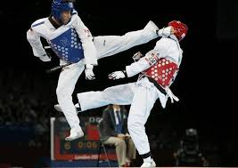
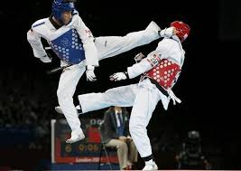

Interests
During my childhood, I had various different passions. I practiced taekwondo for three years then I switched to a more collective sport like football, well I have an interest in computer science because it is constantly evolving and it intrigues me.
 
